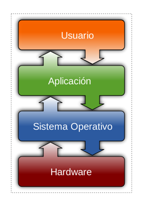
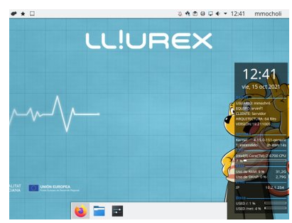

Tipos de Sistemas Operativos
Definición
“Un sistema operativo es el software más importante que se ejecuta en un ordenador. Gestiona la memoria del ordenador, los procesos, y todo su software y hardware. También permite que te comuniques con el ordenador sin que para ello tengas que conocer cómo funciona su propio lenguaje. Sin un sistema operativo, un ordenador sería inútil.”
¿Qué es un sistema operativo?
El sistema operativo es el conjunto de los distintos programas que controlan el funcionamiento de un ordenador.
¿Qué controla un sistema operativo?
- Controla el uso de los dispositivos del ordenador para poderlos utilizar: teclado, monitor, impresora..
- Ejecuta los programas instalados
- Organiza, almacena y recupera la información de los discos. 
¿Qué es un sistema operativo?
Es lo primero que vemos cuando se enciende el ordenador y lo último que funciona cuando lo apagamos. 
Tipos de Sistemas Operativos
- De pago
- Windows
- iOS
- Gratuitos
- Lliurex
- Chrome OS
- Ubuntu
- Android
Características del Sistema Operativo.
- Fácil de utilizar, intuitivo .
- Eficiente . Use bien y rápido los recursos.
- Evolutivo , actualizable para poder avanzar y mejorar según las necesidades.
cual es la correcta?
- El SO controla la configuración del equipo.
- El SO no puede ejecutar programas.
- El SO es siempre gratuito.
- El SO no evoluciona.
cual es la correcta? - solucion
- El SO controla la configuración del equipo.
- El SO no puede ejecutar programas.
- El SO es siempre gratuito.
- El SO no evoluciona.